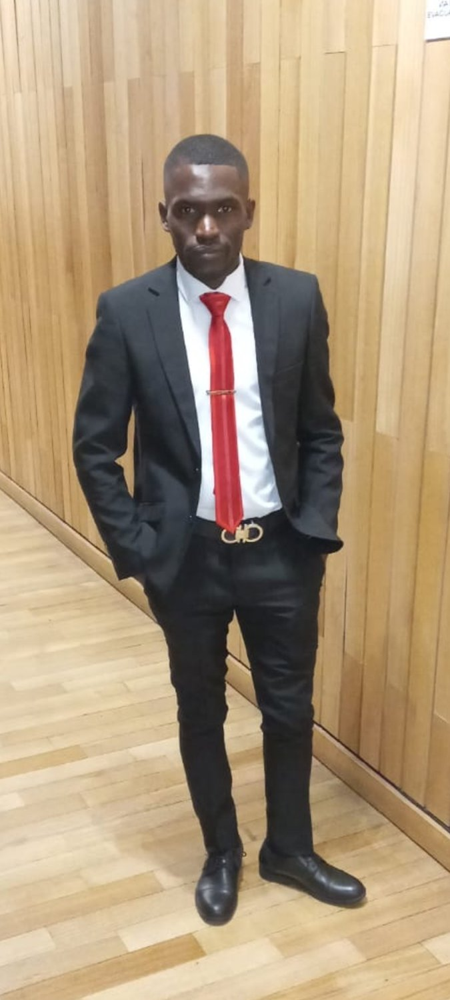
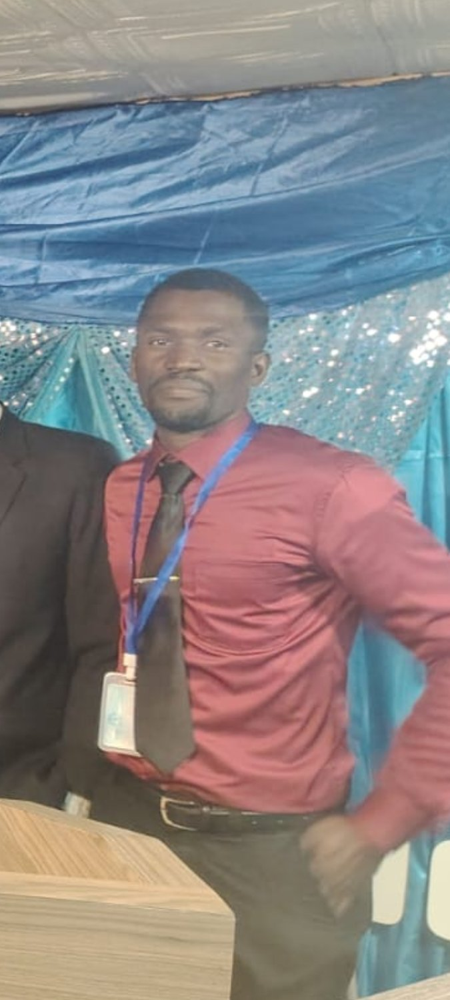
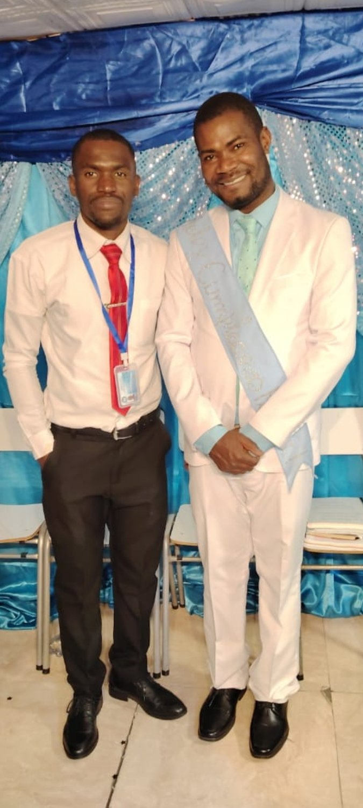
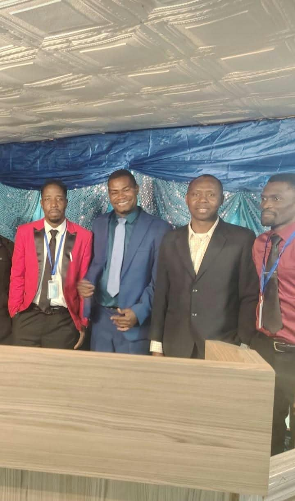

Servir con las manos
Nuestros Obreros
Manos dispuestas a servir, corazones comprometidos con la obra de Dios
En la Primera Iglesia Bautista Haitiana Independiente en Chile, reconocemos con gratitud el trabajo y la dedicación de nuestros obreros, hombres y mujeres que han demostrado compromiso, responsabilidad y disposición para contribuir al crecimiento de nuestra congregación.
Nuestros obreros representan una parte importante de la vida de la iglesia. A través de su esfuerzo, su colaboración y su espíritu de servicio, ayudan a fortalecer las diferentes áreas del ministerio y a mantener viva la visión que Dios ha puesto en nuestro corazón.
Valoramos especialmente a quienes no se limitan solamente a escuchar la Palabra, sino que también están dispuestos a trabajar, colaborar, asumir responsabilidades y aportar sus capacidades para el bienestar de toda la comunidad.
Creemos que el verdadero servicio cristiano se demuestra con hechos, constancia, humildad y compromiso. Cada tarea realizada con amor, cada esfuerzo compartido y cada responsabilidad asumida contribuyen a la edificación de la Iglesia.
Como pastor principal, expreso mi agradecimiento a nuestros obreros por su dedicación y por el trabajo que realizan en favor de la congregación. Seguimos avanzando con la convicción de que una iglesia fuerte necesita obreros comprometidos, preparados para servir y dispuestos a trabajar unidos por una misma visión.
«Así que, hermanos míos amados, estad firmes y constantes, creciendo en la obra del Señor siempre, sabiendo que vuestro trabajo en el Señor no es en vano».
1 Corintios 15:58 (Reina-Valera 1960)
Pastor Faustin Nalus
Pastor principal
Primera Iglesia Bautista Haitiana Independiente en Chile



